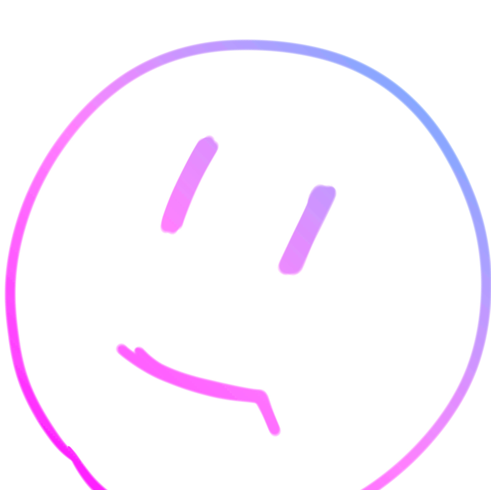

Profile
About Me

3D Archives
これまでに制作した3Dモデルの一部を、このページに集めてみました。
各モデルはブラウザ上で360度自由な角度から鑑賞できるほか、全画面表示にも対応しています。
さらに、AR（拡張現実）機能に対応しており、スマートフォン等のデバイスを用いることで、あなたの目の前の空間に実物大のモデルを投影できます。
まるで模型を手に取るような感覚で、ひとつひとつの造形に込めたこだわりを楽しんでもらえたら嬉しいです。
JR東海 383系
BVE 中央西線 シナリオの一部として制作しました。
このモデルが初の車両ストラクチャーの制作になりました。
丸みを帯びた貫通型先頭車、流線形の非貫通型先頭車、複雑な扉位置などに悩まされましたが、満足いくクオリティで制作することができました。
Created in 2025.06
ダウンロードページへJR東海 313系
BVE 中央西線 シナリオの一部として制作しました。
Projectが終盤に差し掛かっていたこともあり、短期間で仕上げる必要がありました。
資料も少なかったため、全長、全幅、全高のみをもとに、テクスチャから前面形状や各パーツの位置を割り出して制作しました。
Created in 2025.11
ダウンロードページへ名鉄 4000系
BVE 中央西線 シナリオの一部として制作しました。
Projectが終盤に差し掛かっており、こちらも313系と同様で短期間で仕上げる必要がありました。
中央西線では大曽根ですれ違うだけの列車ですが、いつか本当の舞台で日の目を見られる、その日のために...
Created in 2025.10
ダウンロードページへ15階建てのマンション 1
BVE 中央西線 シナリオの一部として制作しました。
ベランダ内部や共用通路、階段の中まで造形している本格的なモデルです。
階段部分が破綻しないように、繰り返しに対応させるのは骨が折れる作業です…
Created in 2024.08
15階建てのマンション 2
BVE 中央西線 シナリオの一部として制作しました。
最上階には装飾があり、夜間には照明が点灯するように制作しました。
こちらも共用通路、階段造形しましたが、シナリオでの登場は数回程度です。
Created in 2024.08
コンビニエンスストア
BVE 中央西線 シナリオの一部として制作しました。
高架区間から非常によく見える店舗だったため、駐車場の路面標示まで制作しています。
実はテクスチャに私が写り込んでおり、一部にぼかしがかかっています。
Created in 2024.08
ショッピングモール
BVE 中央西線 シナリオの一部として制作しました。
立体駐車場のスロープ部分においては、テクスチャとモデルとの間で傾斜に差が出ないように、細心の注意を払いました。
珍しく夜景非対応ですが、実店舗も21時過ぎには閉店してしまうので、誤差です。
Created in 2023.06
ふそう エアロスター MP38
中央西線でも使用できますが、こちらは趣味で制作しました。
金山駅で見かけた、当時最新鋭の白幕MP38がかっこよくて、作りたくなりました。
やけにタイヤ部分がリアルだったので、一部の部品は再就職先を見つけました。
Created in 2025.04